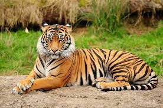

Flora : The plants which are found in a paticular area.
Fauna: The animals which are found in a paticular area.
An ecosystem is made of all the plants , animals and microorganism in an area along with non-living components such as climate , soil , river deltas etc..
A group of plants or animals having similar characteristic and capable of interbreeding within the group is termed as SPECIES
The species of animals whose numbers are diminishing to such a level that they might face extinction.
The species of animals whose number is zero because of changes in their habitat and other calamities .
Species which are found only in a paticular area is called Endemic species.
Red Data Book is a sourcebook which keeps records of all endangered plant and animals . Red Data Book is also known as IUCN Red List
Biosphere is the part of the earth in which living organisms exist or which support life.
The areas reserved in a forest for the protection of wild animals.
The areas meant for the protection of conservation of biodiversity . it also helps in maintainning the culture of that area.
National Park is an area strictly reserved for the betterment of wildlife and where activities like Forestry, grazing, or cultivation are not permitted.
Project Tiger is a wildlife conservation movement initiated in India in 1973 to protect bengal tigers.This project was launched to ensure the survival maintenance of the tiger population in the country. Tiger is one of the many species which are slowly disappearing from our forest . The tiger is an endangered species in the world .By this project number of tigers is increased .